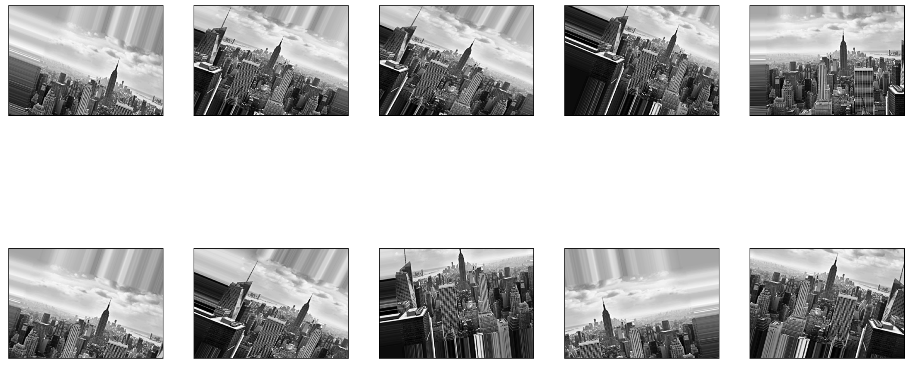

import matplotlib.pyplot as plt
from matplotlib.image import imread
logo = imread('../Intro2DS_logo.jpg')
plt.imshow(logo)
plt.show()Introduction to Data Science
Convolutional Neural Networks - Class 13
Giora Simchoni
gsimchoni@gmail.com and add #intro2ds in subject
Stat. and OR Department, TAU
Before CNN
Reminder: What is an image?
Until Convolutional Networks
So how many features is that?
Until then:
- Treat it as a regular high-dimensional ML problem
- Image feature engineering
Convolutional Layer (2D)
What is Convolution?
“the integral of the product of the two functions after one is reflected about the y-axis and shifted”
\[(f \ast g)(t) = \int_{-\infty}^{\infty} f(\tau)g(t - \tau)d\tau\]

The Convolutional Layer

Source: Geron 2019
- First layer: every neuron has a “receptive field”, it is focused on a specific rectangle of the image, usually 2x2, 3x3
- Second layer: every neuron has a receptive field in the first layer
- Etc.
More specifically

Source: Geron 2019
- The \([i,j]\) neuron looks at the rectangle at rows \(i\) to \(i + f_h - 1\), columns \(j\) to \(j + f_w - 1\)
- Zero Padding: adds 0s around the image to make the next layer the same dimensions
Filters/Features/Kernels
But what does the neuron actually do?
All neurons in a layer learn a single filter the size of their receptive field, the \(f_h, f_w\) rectangle.
Suppose \(f_h=f_w=3\) and the first layer learned the \(W_{3x3}\) filter:
\(X\) is the 5x5 image, suppose it has a single color channel (i.e. grayscale), sort of a smiley:
Each nuron in the new layer \(Z\) would be the sum of elementwise multiplication of all 3x3 pixels/neurons in its receptive field with \(W_{3x3}\):
\(Z_{i,j} = b + \sum_{u=0}^{f_h-1}\sum_{v=0}^{f_w-1}X_{i+u,j+v}W_{u,v}\)
What turns on this filter?
What low-level feature did this layer learn to look for? What pattern will make its neurons most positive (i.e. will “turn it on”)?
Another filter
What low-level feature did this layer learn to look for? What pattern will make its neurons most positive (i.e. will “turn it on”)?
Convolving with Tensorflow
Making CNN Work
Strides
In many CNN architectures layers tend to get smaller and smaller using strides:

- The \([i,j]\) neuron looks at the rectangle at rows \(i \cdot s_h\) to \(i \cdot s_h + f_h - 1\), columns \(j \cdot s_w\) to \(j \cdot s_w + f_w - 1\)
Stacking Feature Maps
A convolutional layer is actually a 3D stack of a few of the 2D layers we described (a.k.a Feature Maps), each learns a single filter.

Source: Geron 2019
- Feature map 1 learns horizontal lines
- Feature map 2 learns vertical lines
- Feature map 3 learns diagonal lines
- Etc.
And each such feature map takes as inputs all feature maps (or color channels) in the previous layer, and sums:
\(Z_{i,j,k} = b_k + \sum_{u=0}^{f_h-1}\sum_{v=0}^{f_w-1}\sum_{k'=0}^{f_n-1}X_{i \cdot s_h+u,j \cdot s_w+v, k'} \cdot W_{u,v,k', k}\)
Where \(f_n\) is the number of feature maps (or color channels) in the previous layer.
- Feature map 1 with \(f_h \cdot f_w\) filter \(\cdot f_n\) color channels + 1 bias term (it’s a filter cube!)
- Feature map 2 with \(f_h \cdot f_w\) filter \(\cdot f_n\) color channels + 1 bias term
- Etc.
And how does the network learn these filters?
Too early to rejoice
That’s still quite a lot.
- 100 x 100 RGB image
- 100 feature maps in first layer of filter 3x3
- (3 x 3 x 3 + 1) x 100 = 2800 params, not too bad
- But 100 x 100 numbers in each feature map (x 100) = 1M numbers, each say takes 4B, that’s 4MB for 1 image for 1 layer
- Each number is a weighted sum of 3 x 3 x 3 = 27 numbers, so that’s 1M x 27 = 27M multiplications for 1 layer…
Pooling Layers
A pooling layer “sums up” a convolutional layer, by taking the max or mean of the receptive field.
No params!
Source: Geron 2019
Usually with strides \(s_w=s_h=f_w=f_h\) and no padding (a.k.a VALID):
Clearly we’re losing info.
A 2x2 max pooling layer would reduce the size of the previous layer by how many percents?
But maybe sometimes it’s a good thing to ignore some neurons?
Is CNN a linear operator?
Typical CNN
Image Data Augmentation
It’s very hard to “augment” data about people, products, clicks.
Images are different.
- Translation
- Rotation
- Rescaling
- Flipping
- Stretching
Are there some images or applications you wouldn’t want augmentations or at least should go about it very carefully?
In Keras you can augment “on the fly” as you train your model, here I’m just showing you this works:
from tensorflow.keras.preprocessing.image import ImageDataGenerator
idg = ImageDataGenerator(
rotation_range=30,
zoom_range=0.15,
width_shift_range=0.2,
height_shift_range=0.2,
shear_range=0.15,
horizontal_flip=True,
fill_mode='nearest'
)
ny_generator = idg.flow(ny4D, batch_size=1)
nys = [ny_generator.next() for i in range(10)]See the ImageDataGenerator for more.

Why do CNN work?
- No longer a long 1D column of neurons, but 2D, taking into account spatial relations between pixels/neurons
- First layer learns very low-level features, second layer learns higher level features, etc.
- Shared weights –> learn feature in one area of the image, generalize it to the entire image
- Less weights –> smaller size, more feasible model, less prone to overfitting
- Less overfitting by Pooling
- Invariance by Max Pooling
- Hardware/Software advancements enable processing of huge amounts of images
Back to Malaria!
Reminder
import tensorflow_datasets as tfds
from skimage.transform import resize
from sklearn.model_selection import train_test_split
malaria, info = tfds.load('malaria', split='train', with_info=True)
images = []
labels = []
for example in tfds.as_numpy(malaria):
images.append(resize(example['image'], (100, 100)).astype(np.float32))
labels.append(example['label'])
if len(images) == 2500:
break
X = np.array(images)
y = np.array(labels)
X_train, X_test, y_train, y_test = train_test_split(X, y, test_size=0.20, random_state=42)
print(X_train.shape)
print(X_test.shape)(2000, 100, 100, 3)
(500, 100, 100, 3)from tensorflow.keras import Sequential
from tensorflow.keras.layers import Dense, Conv2D, MaxPooling2D, Flatten, Dropout
from tensorflow.keras.callbacks import EarlyStopping
model = Sequential()
model.add(Conv2D(filters=32, input_shape=(X_train.shape[1:]),
kernel_size=(3, 3), padding='same', activation='relu'))
model.add(MaxPooling2D(pool_size=(2, 2)))
model.add(Conv2D(64, kernel_size=(3, 3), activation='relu'))
model.add(MaxPooling2D(pool_size=(2, 2)))
model.add(Flatten())
model.add(Dropout(0.5))
model.add(Dense(1, activation='sigmoid'))
model.compile(loss='binary_crossentropy',
optimizer='adam', metrics=['accuracy'])Model: "sequential"
_________________________________________________________________
Layer (type) Output Shape Param #
=================================================================
conv2d (Conv2D) (None, 100, 100, 32) 896
max_pooling2d (MaxPooling2D (None, 50, 50, 32) 0
)
conv2d_1 (Conv2D) (None, 48, 48, 64) 18496
max_pooling2d_1 (MaxPooling (None, 24, 24, 64) 0
2D)
flatten (Flatten) (None, 36864) 0
dropout (Dropout) (None, 36864) 0
dense (Dense) (None, 1) 36865
=================================================================
Total params: 56,257
Trainable params: 56,257
Non-trainable params: 0
_________________________________________________________________Last time we got to 69% accuracy after tuning…
And this is just 10% of the data.
Watch me reach ~94% accuracy with 100% of the data in Google Colab.
Think about the researchers seeing this for the first time in 2012…
Visualizing CNN
Visualizing filters/kernels/features/weights
First filter of 32:
Visualizing Feature Maps

(1, 100, 100, 32)CNN Architectures
ImageNet
Source: paperswithcode.com
LeNet-5 (1998)
Source: LeCun et. al. 1998
You know you can implement this in just a few lines of Keras…
from tensorflow.keras.layers import Conv2D, AveragePooling2D,
Flatten, Dense
from tensorflow.keras import Sequential
model = keras.Sequential()
model.add(Conv2D(filters=6, kernel_size=(3, 3),
activation='relu', input_shape=(32,32,1)))
model.add(AveragePooling2D())
model.add(Conv2D(16, kernel_size=(3, 3), activation='relu'))
model.add(AveragePooling2D())
model.add(Flatten())
model.add(Dense(120, activation='relu'))
model.add(Dense(84, activation='relu'))
model.add(Dense(10, activation = 'softmax'))AlexNet (2012)
Source: Krizhevsky et. al. 2012
See a Keras implementation e.g. here
ResNet (2015)
- Source: He et. al.
- This is ResNet-34 (34 layers)
- ResNet-152 (152 layers!) achieved 4.5% Top-5 error rate with single model
Residual Learning
- “Is learning better networks as easy as stacking more layers?” Yes, but:
- the vanishing/exploding gradients problem
- With Residual Learning the activation from a previous layer is being added to the activation of a deeper layer in the network
- The signal is allowed to propagate through the layers
- The model learning \(H(X)\) will be forced to learn \(H(X) - X\), hence residual learning.
Using Pre-trained Models
What is a trained CNN?
Look up keras.io/api/applications/
ResNet on your local machine
johann = resize(johann, (224, 224))
johann = johann.reshape(1, 224, 224, 3) * 255
johann = preprocess_input(johann)
johann_pred = model.predict(johann, verbose=0)
print(johann_pred.shape)(1, 1000)Norwegian_elkhound: 0.30
Eskimo_dog: 0.27
Siberian_husky: 0.17
German_shepherd: 0.15
malamute: 0.06Look mom, no training!
What’s Next?
This was simple image classification. Furthermore you’d see:
- Transfer Learning
- Object Detection
- Segmentation
- Captioning
- 3D Reconstruction
- Restoration
- Pose Estimation
- Generative models (e.g. GANs)
- Doing it all on Video
- And doing it all in real time, on your phone or in your car 😀